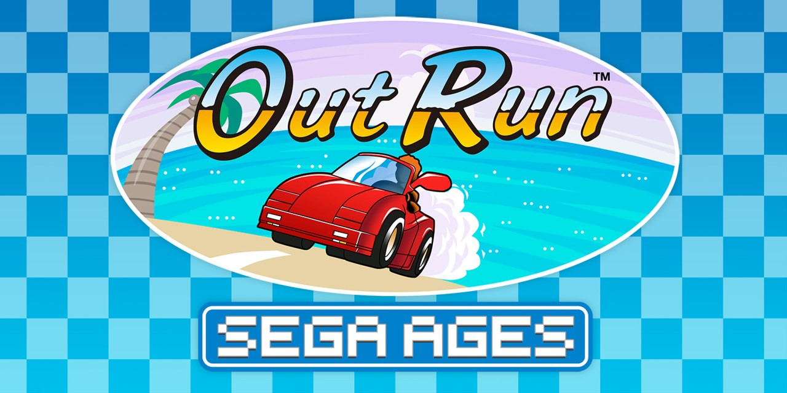
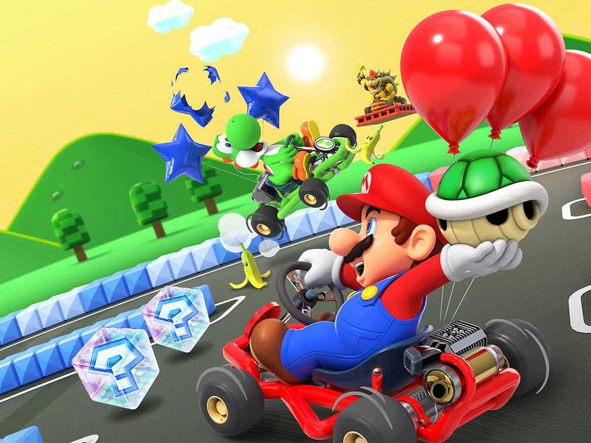

Los videojuegos de carreras son aquellos en donde el jugador controla a un personaje o vehículo que compite en una carrera contra otros vehículos a lo largo de una pista.
Este es el género de carreras mas antiguo en donde el objetivo principal es mantenerse a salvo y evitar las colisiones. La mayoría de estos juegos incluyen un tiempo limitado en el que el jugador debe tratar de alcanzar la meta o punto intermedio, si no lo logra pierde automáticamente. Como variante hay juegos que utilizan combustible en lugar de tiempo y el jugador debe recoger contenedores durante la carrera para evitar que se agote. Ejemplos: Pole Postion, OutRun.
Este género es el que mejor representa a las competiciones reales de vehículos. El jugador debe competir en una pista contra varios corredores en igualdad de condiciones y tratar de llegar primero a la meta. Al igual que en los campeonatos de carreras, el objetivo es sumar puntos a lo largo de varios circuitos para lograr tener la mejor calificación al terminar el torneo y coronarse campeón. Existen numerosas subdivisiones de este género según el tipo de vehículos que compiten (Formula-1, rally, motos, jet ski). Muchos de estos videojuegos representan competiciones, pilotos, vehículos y pistas reales. También existen aquellos que presentan vehículos ficticios, como las carreras futuristas, en donde los vehículos son máquinas fantásticas que viajan a enormes velocidades en pistas con muchos peligros. Ejemplos: F1, Top Gear, Need for Speed.

Los videojuegos de carreras de combate también se basan en la competición de varios vehículos por llegar primero a la meta, aunque la mayor diferencia está en el agregado de armas o ítems que los competidores pueden usar para obtener ventaja, hacer trampa y atacar deliberadamente a un oponente. Los controles suelen ser más simples que en los demás juegos de carreras de modo que los jugadores que reciben daño o chocan se puedan recuperar rápidamente. Muchos de estos videojuegos, principalmente los de carreras de karts, incluyen pistas fantásticas, llenas de trampas y obstáculos que aumentan considerablemente el grado de acción. Ejemplos: Road Rash, Super Mario Kart.
